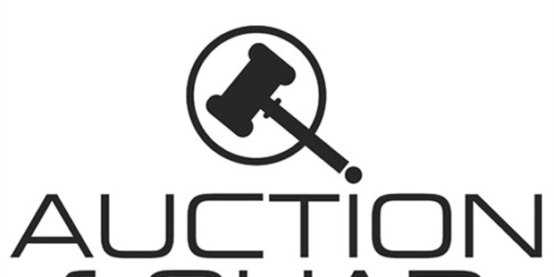

Sell And Buy Your Products
WELCOME BIDDER
YourBid.com was started when founder, AKSHAY AGARWAL, had an idea of creating an online auction site that focused on building a powerful community where people were free to buy and sell affordability and with simplicity. After many successful years as an auctioneer, Akshay went on to became one of the first "Power Sellers" online but was continually frustrated and dissatisfied with the established online auctions because they seemed so intent on injecting themselves into each and every transaction making things difficult, awkward, and very expensive. He began to dream up a marketplace where sellers were not penalized for doing well and buyers could easily connect with sellers through an open and simple platform. It was from this dream that OnlineAuction.com was designed and established and continues to this day with the sole purpose of creating a simple marketplace where buyers and sellers connect.
Customers Matter: We are here because of and for you, our valuable customers. We realize that if there is anything we cannot afford to skimp on it's customer service. This "About Us" page should really be called "About You" because that's really what this site is all about. Many companies say this, but we live it!
No Final Value or Listing Fees: Sellers keep every penny of the final value of a closing auction! We believe most online auctions have become too expensive for sellers so we developed a flat fee of $8.00 per month.
Freedom: We encourage our customers to link their auctions to their own web site. We also allow emailing to promote your products, and we encourage you to contact previous customers. We don't want to control your business or dictate what you can or can't do.
YourBid: The way most auction sites are designed makes it possible for bidders to be "sniped" out of a winning bid by someone who waits until the last second and quickly outbids them. Our site works more like a real auction in that as long as there is live bidding (within last minute) and at least two bidders then the auction is extended (1 minute 15 seconds) which gives bidders a chance to win an item back and helps sellers get the maximum amount for their goods.